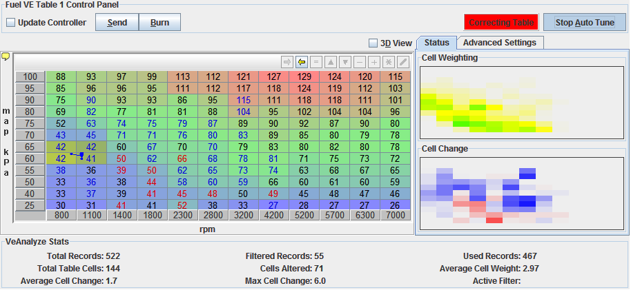
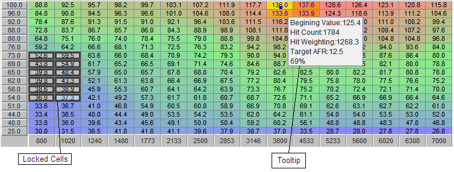
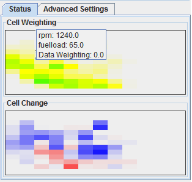
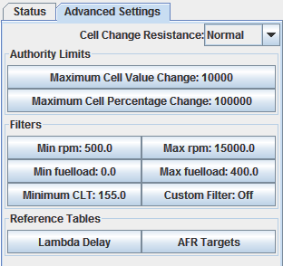
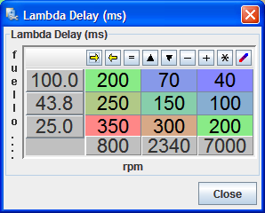

|
VE Analyze Live!
|
|

Understanding VE Analyze
Overview:
There are mixed viewpoints of auto tune type functions, but in reality a well designed autotune based on analyzing data with a computer will just do a better job that a human can.
There is a big if to this.... The Auto tune needs to consider all the factors a knowledgeable human would. Most auto tunes are overly simplistic and don't consider all the factors a knowledgeable human would. This approach can get you started but will never do a better job.
VE Analyze looks at all the key factors that I do after 25 years of tuning with the manual approach. However, My human brain can not hold thousands of data points at once and produce the statistical averages :) This is a huge advantage.
VE Analyze successfully implements this tuning knowledge with the capabilities of the computer to produce automated tuning unmatched by any other program available for aftermarket EFI controllers.
When VE Analyze is working right it should do a better job than you can.
The places for manual intervention would be to alter cells with no data and perhaps some smoothing. I do have a plan for applying the same logic I do in these cases too.
Primary Controls:

- Update Controller checkbox - When checked, VE Analyze will update the controller every 15 seconds with the recommended values. It will act as if you are pressing the Send button every 10 seconds. This will allow VE Analyze to dial in as you drive. If you want VE Analyze to generate the recommendations, but not send them to the controller until you have been able to review them, leave this unchecked.
Uncheck is the is recommended for 1st use especially at heavy throttle conditions so you can verify that the recommended values pass the sanity check.
- Send Button - When clicked, the recommended table will be written to the controller ram and it will begin using the recommended table.
- Burn Button - This signals the Controller to persist the values in RAM to Flash so they are stored for use after the controller is power cycled. When values are written to RAM, but not flash, the controller will use them, however once the controller is power cycled they are lost and the values will be loaded from Flash. So this button should be clicked when you are finshed and what to keep you values.
- Start / Stop Auto Tune Button - Activates and deactivates VE Analyze.
Recommended Table:

This is the primary table being operated on. As the recommended values change from the original value, the numbers color will change to blue if the value is richer, and red if it has been made leaner.
ToolTip - Pay attention to the tooltips, there is a good deal of useful information for the specific cell you hover over:
- Beginning Value - The value for this cell before VE Analyze was started.
- Hit Count - The total number of data records that have contributed to this cells recommended value.
- Hit Weighting - The total weighting of the data contributing to this recommendation. Each time a data record is used for a cell, the weighting on that hit is considered. The weight is derived from the percentage that cell was contributing to the interpolated VE value.
- Target AFR - This is the AFR that VE Analyze is targeting for this cell.
- Hit Percentage - The percentage weight that the cell is currently contributing to the run time interpolated VE value.
Cell Locking - You can lock cells so they will not be altered by VE Analyze by selecting them, then right click, select Lock Selected Cells.
To unlock them, select the locked cells you want to unlock, right click and select Unlock Selected Cells
Heat Maps:

- Cell Weighting - Visually displays how much data has contributed to the recommended value.
This allows you at a glance to see what sections of the table you have covered during your VE Analyze session and what sections you have not, or needs more coverage. Ideally you want to turn as much of this Heat Map green as possible.
Holding the mouse over and specific block will bring up a tooltip that indicates what X & Y coordinate the block represents.
- Cell Change - Visually displays how much the recommended values changed from the starting value. Displayed dark blue to dark red, richer to leaner. Holding the mouse over and specific block will bring up a tooltip that indicates what X & Y coordinate the block represents.
Advanced Settings:

The advanced settings are all defaulted to reasonable values, but give you the opportunity to adjust important operating parameters of VE Analyze Live!
There are 3 key sections in the Advanced Settings:
- Authority Limits - Safety limits to restrict the amount of change that VE Analyze Live can perform.
- Filters - VE Analyze Live filters any data points that would be considered less accurate due to specific events or circumstances. Some of these filters are user adjustable and are available in this section.
- Reference tables - Provides access to the key tables that VE Analyze Live uses for input data Lambda Delay & AFR Target
Authority Limits:
- Maximum Cell Value Change - The maximum amount of change from the starting value that VE Analyze is allowed to change the table value.
- Maximum Cell Percentage Change - The maximum change from the starting value will be limited by percentage. This will allow limits to be proportional to starting value.
Filters:
- Min rpm - The minimum rpm to accept input data to VE Analyze.
- Max rpm - The maximum rpm to accept input data to VE Analyze.
- Min Y Axis - The target field for this Filter will be based on your firmware and configuration. Typical fields would be fuelload, map, tps, maf.. The minimum Y field value to accept input data to VE Analyze.
- Max y Axis - The target field for this Filter will be based on your firmware and configuration. Typical fields would be fuelload, map, tps, maf.. The maximum Y field value to accept input data to VE Analyze.
- Min CLT - During engine warm up there are additional corrections being applied and your engine will have different fuel needs as there are inconsistent parts temperatures. This filter insures that data is not used for VE Analyze when the coolant temperature is below the set value..
- Custom Filter - This allows the flexibility to create and apply any formula or mathematical expression using any outputchannels you wish to set conditions to filter VE Analyze input data.
Reference Tables:
- Lambda Delay - This will open the Lambda Delay table for editing. See further explanation of the Lambda Delay table here.
- Target AFR - Provides access to the target AFR table that TunerStudio will use for target AFR during a VE Analyze session.
Lambda Delay:

As with all sensors, the lambda sensor can only read and report a measured variable, in doing this there will be a delay.
For a Lambda sensor the primary delay comes from 2 factors:
- Latency of the sensor - This includes the time it takes for the sensor to measure and the WB controller to interpret and report.
- Exhaust gas flow time - The time it takes for exhaust gases to flow from the cylinder to the Lambda sensor to be measured.
The Lambda Delay table is defines the latency between a change to AFR and the EGO sensor reflecting that change.
Using VE Analyze Live:
Operation of VE Analyze should be relatively straight forward. Within this help manual there are a number of additional
settings explained, however for most applications the default values are best for initial tuning and will work very well there after.
If you are using multiple fuel tables for dual table or table switching, make sure the secondary table is assigned to the correct
EGO sensor. By default VE Table 2 is assigned to O2 Sensor 2 for most firmwares.
Common steps to operating:
1) Start vehicle and bring up to normal operating temperature. While below the temperature set in Advanced Controls, all data will be filtered.
2) For the first usage, it is recommended that you leave "Update Controller" unchecked. This will give you the opportunity to review the changes
that VE Analyze made and insure things are set up correctly before applying the recommended settings. Once you know things are operating correctly,
you should be able to leave this checked for normal driving. Under heavy throttle or boost conditions, the safer approach is to leave this uncheck always.
3) Click "Start Auto Tune" - This should begin providing updates to the recommended settings at once. If you do no see
updates occurring, check VE Analyze Stats - Active Filter field, this displays any active filter so you can better under stand what condition is causing the data to be filtered.
Common filters would be during warm up, or if you see O2 out of range check to make sure you O2 sensor is providing active data.
4) Begin driving the vehicle around. The goal is to collect enough data for all parts of the fuel table to give you accurate results.
Have someone ride with you to use the "Cell Weighting" Heat map as a guide. Ideally you want to get all sections of the table within driving range to a green state.
That means that VE Analyze has gotten significant usable data for that section.
5) When you have driven enough to collect data on the sections of the table you wanted to get tuned, stop. If the results do not give cause for concern
click "Send" then Burn or just Burn before powering down the controller by turning off the vehicle. This will insure the corrections are saved to the controller.
You may notice some cycling of values from one session to another. This is normal as there is are going to be some changes to conditions, so unless all
corrective factors are set to an ideal state, the perfect fuel table value will be slightly different.
An important consideration is always the AFR target table. By default the same one the controller uses is selected. You can change the targe table
or use a custom AFR table that is the same size as the fuel table if you want. If using a wideband EGO, it is recommended that the same table
is used as the controller uses during operation. On a narrow band setup, the controllers table would not be used by the controller and may not be setup.
In this case the custom table is more desirable. Which ever table you prefer, the important part is to validate that the target AFR table is configured correctly.
Note: VE Analyze was designed to use with controller settings left as you would normally drive the car.
Typically it is recommended that Accel Enrichment and and ego correction settings are left on unless you do not use them under normal circumstances.
©2010 EFIAnalytics.com